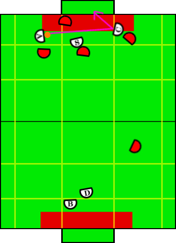

Play: Cross Crease Pass
Description:
Similar to plays in the past, the creator sets up and completes a
cross-crease pass from the aggressor and shot on goal. The basic concept
is to get the opponent goalie to setup on the wrong side of the field,
then shoot and score around behind him before he has time to react.
Illustration:

Positions Present:
- Blocker
- Defender
- Aggressor
- Creator
- Special Op Creator
Position Strategies:
Blocker + Defender:
Work together cutting down shots in same fashion as described in Loose Defense.
Call TandemBlockerSkill and TandemDefenderSkill
|
Aggressor:
Turns to creator, then kicks, running to the corner post but outside of defense zone.
Call CrossCreasePassSkill
|
Creator + Special Op Creator:
Creator maintains position to receive a cross-crease pass. Special-Op screens approaching opponents, while maintaining a position between the aggressor and the creator in order to catch stray passes.
Call OppositeReboundOffenseSkill for Creator and MidReboundOffenseSkill on special op.
|
Transitions:
|
Once the aggressor is aligned to shot at the creator and kicks the ball, or if the
play timer times out.
|
Position Switching:
- Aggressor, SpecialOpCreator
|
- If aggressor loses possession of the ball and special op closer than
aggressor, switch.
|
|